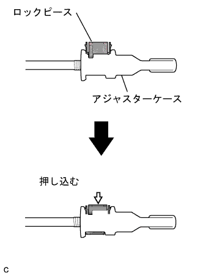

Shift Lock Control Unit Assembly Adjustment |
| 1. Inspect Shift Lever Position |
Turn IG ON and depress the brake pedal.
When shifting the shift lever to each position, check that the shift lever operates smoothly, moves into each position with a positive feel, and the position indicator shows the position correctly.
Start the engine, and check that the vehicle moves forward when shifting from the N position to the D position, and moves backward when shifting to the R position.
| 2. Adjust Shift Lever Position |
Apply the parking brake and move the shift lever to the N position.
Remove the instrument panel finish panel lower.
(see)
 |
Disconnect the cable end from the shift lock control unit.
 |
Using a thin-bladed screwdriver, pull out the stopper of the transmission control cable, turn the nut approximately 180° counterclockwise, and while holding the nut, disconnect the transmission control cable from the shift lever retainer.
 |
While pushing the claw of the lock piece, hold down the claw on the back side and push up the lock piece from the back side.
Turn the nut of the transmission control cable 180° counterclockwise, and while holding the nut, push in the stopper until it clicks 2 time.

Install the cable outer of the transmission control cable to the shift lever retainer, check that the spring is at position A as shown in the illustration, and push in the stopper.

 |
Install the cable end to the shift control unit.
 |
Push the lock piece into the adjuster case to lock it.
After adjustment, inspect the operation, and if there is a problem, adjust again.
Install the instrument panel finish panel lower.
(see)